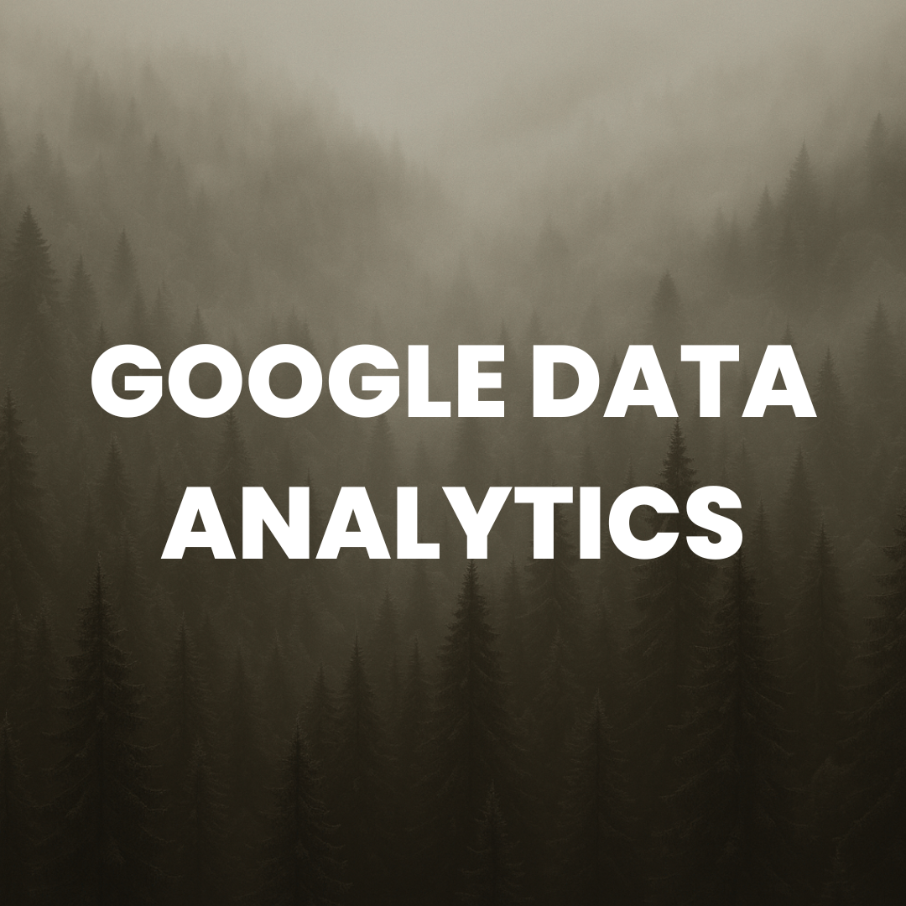
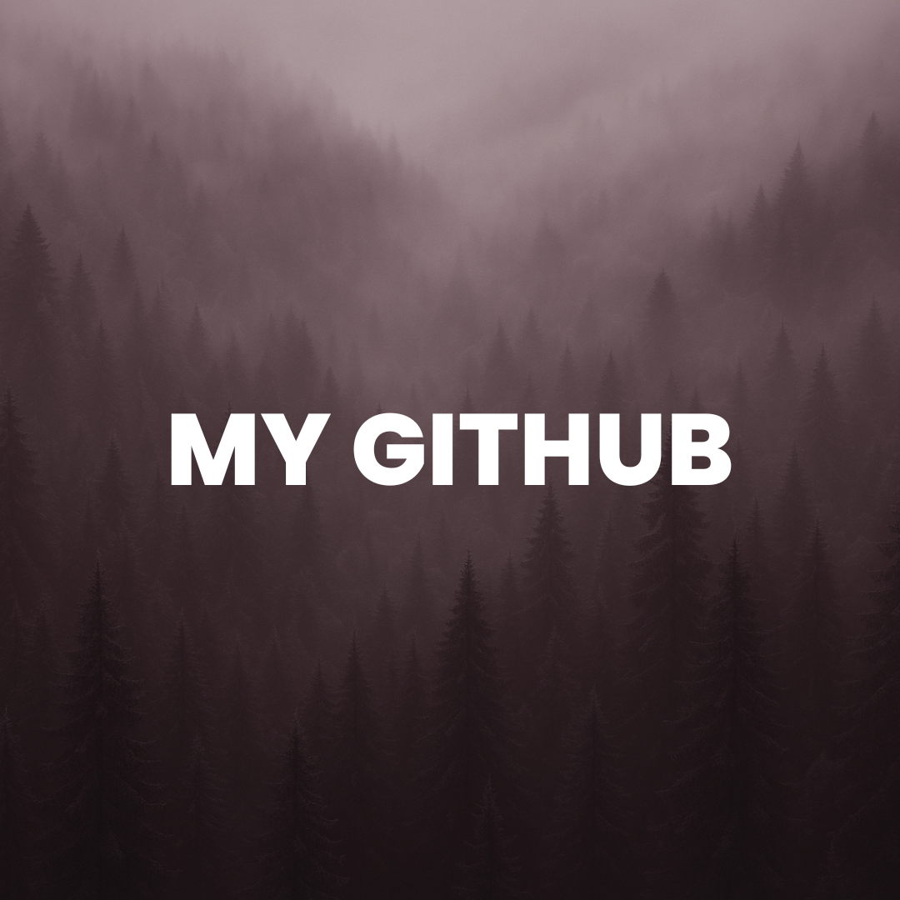
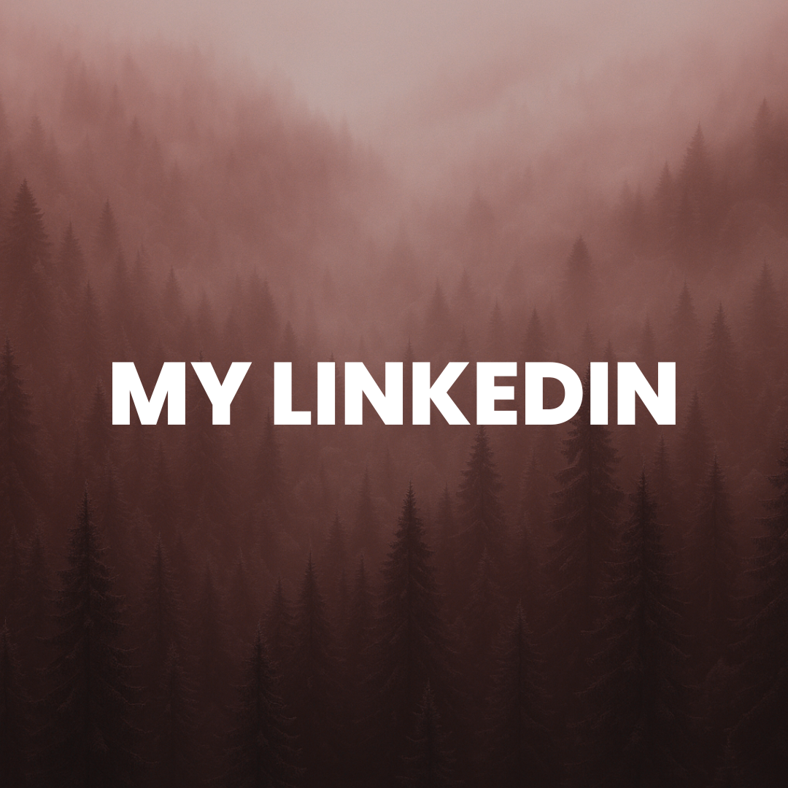

TORONTO, CANADA · CS GRADUATE
A little curiosity.
A lot of building.
Hey, I'm Abrar Tarafder.
I turn complex problems into useful software, reliable databases, and thoughtful digital experiences.
 THE PERSON BEHIND THE PROJECTS
THE PERSON BEHIND THE PROJECTSA curious mind. A practical approach.

Good software starts with a good question.
Computer Science graduate · York UniversityPassionate about continuous learning and eager to explore, I thrive on embracing change and actively seek out new challenges. With nearly 4 years of professional experience gained through co-op and contract opportunities during my undergraduate studies, spanning software development, database engineering, database design, automation, web design, and web development, I enjoy building solutions that solve real-world problems while continuously expanding my technical and creative expertise. Whether it's exploring innovative technologies, connecting with inspiring individuals, or contributing to meaningful projects, I'm always excited to learn and grow. I'm now looking for opportunities to bring that experience to a team and keep building meaningful things.
Download My ResumeThe tools behind the work.
Tools + Platforms
Gitlab CI/CD Jira Notion Kanban Sharepoint / Sharepoint Designer Oracle SQL Developer Infinity (Task Management Tool) MailChimp PowerBIUI, Design + Frontend
HTML + CSS (Bootstrap, Tailwind, etc) Figma Canva Tkinter (GUI for Python) ReactJS (learning the MERN stack)Programming Languages, DB + Backend
C++ Java Assembly + C Python MongoDB SQL Data Analytics JavaScript (beginner) Shell Scripting DevOps SCADA YAMLOther Softwares and Programs
WordPress MS Word Adobe PhotoShop Adobe InDesign MS Excel Tableau (beginner) Google DriveCertificates
Job Ready Experience Program Human Resources Program Project Management Program Solutions Architect Program Markets Program Google Data Analytics Professional Certification CourseProject + Agile Method
Technical Documentation LaTex Mermaid Diagram (for sys design and workflows)Where I've put it into practice.
Database Developer and Administrator
York University May 2026 - Aug 2026OT Operations Intern (16 month Co-op)
Hydro One May 2024 - Aug 2025Web Developer / Digital Outreach Research Assistant
Walk With Web Inc May 2023 - May 2024Freelance Analyst
InTech March 2023 - May 2023Software Development / Digital Marketing Intern
Opal LLC June 2022 - January 2023Digital Marketer + Advertisement Designer
EasyTraffic May 2022 - September 2022Tutor
Self-Employed May 2022 - July 2022Sales Associate
Global Commodities Traders Inc. Jun 2020 - Aug 2020Beyond the day job.
Student Ambassador
Jarvis Consulting Group April 2023 - April 2024LEARN Student Ambassador
Microsoft July 2023 - December 2023A few things I've worked on.


